Project 4: [Auto]Stitching Photo Mosaics
Part A: Image Warping and Mosaicing
A.1: Shoot the Pictures
Here are three sets of images I took of a cafe, my apartment, and my bedroom. Each set has a projective transformation between the two images, where I rotated the camera.
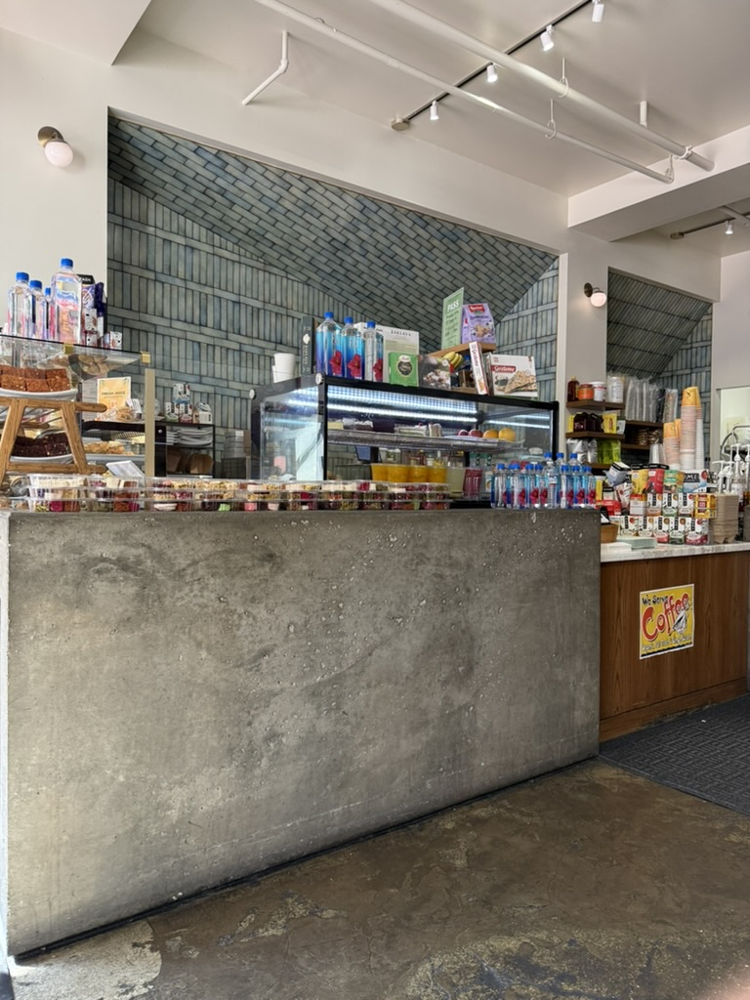
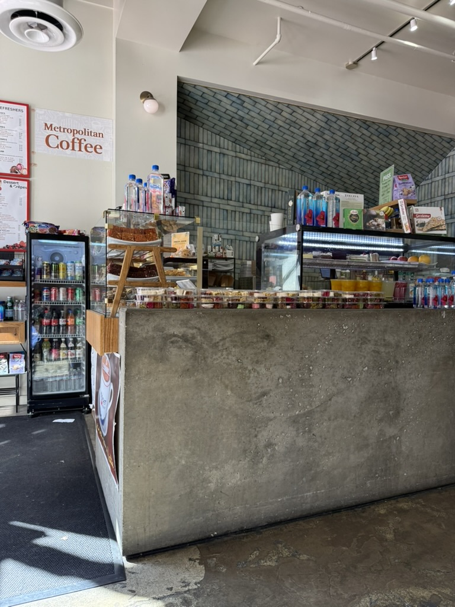
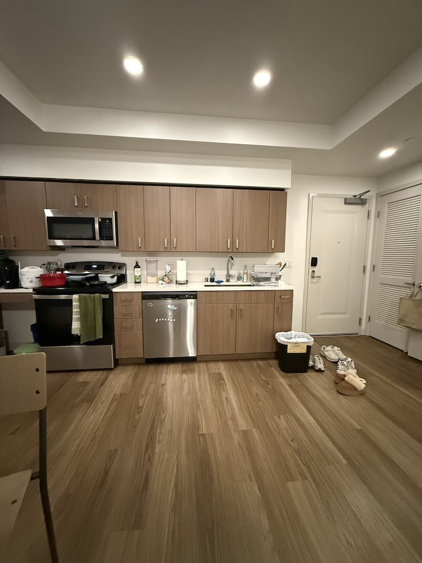
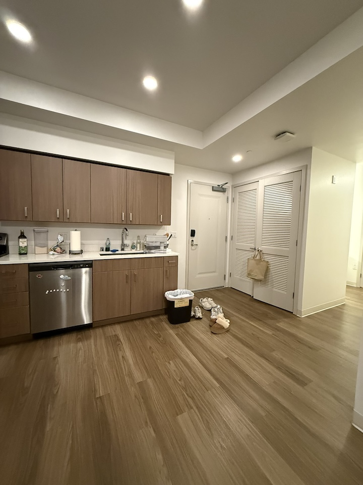
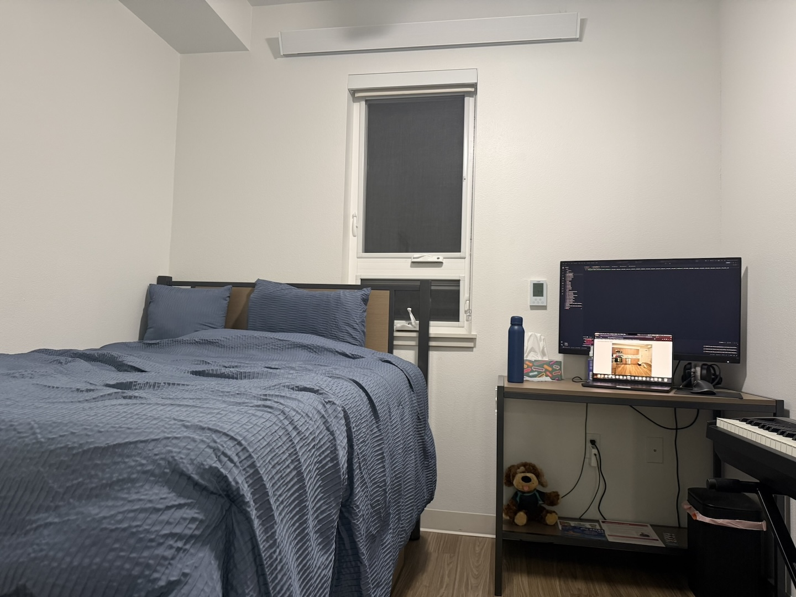
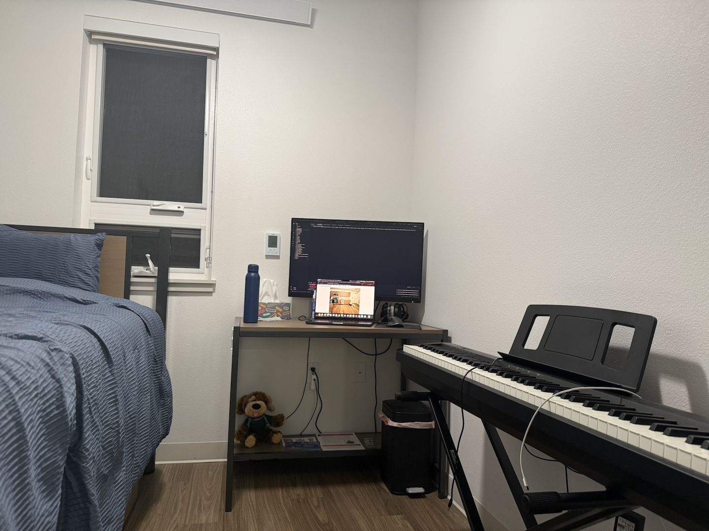
A.2: Recover Homographies
To compute the homography between two images in a set, I wrote the following function:
def compute_H(im1_points, im2_points):
"""
im1_points: (n, 2)
im2_points: (n, 2)
p' = Hp
Output H: (3, 3)
"""
A = []
for (x, y), (x_prime, y_prime) in zip(im1_points, im2_points):
A.append([x, y, 1, 0, 0, 0, -x * x_prime, -y * x_prime])
A.append([0, 0, 0, x, y, 1, -x * y_prime, -y * y_prime])
A = np.array(A)
b = im2_points.flatten()
h = np.linalg.lstsq(A, b)[0]
H = np.concat([h, [1]]).reshape((3, 3))
return H
The compute_H function creates a system of equations in the form $Ah=b$, then solves for
$h$ using least squares. Here, $h$ is a column vector of the eight values $a$ through $h$ in the homography
matrix $H$, assuming $i$ is fixed as $1$.
Using the homography equation $p'=Hp$, the full form can be written as:
\[ \begin{bmatrix} wx' \\ wy' \\ w \end{bmatrix} = \begin{bmatrix} a & b & c \\ d & e & f \\ g & h & 1 \end{bmatrix} \begin{bmatrix} x \\ y \\ 1 \end{bmatrix}. \]Multiplying out the matrix multiplication gives $ax + by + c = wx'$, $dx + ey + f = wy'$, and $gx + hy + 1 = w$. Dividing the first two equations by the third gives:
\[ \frac{ax + by + c}{gx + hy + 1}=x', \qquad \frac{dx + ey + f}{gx + hy + 1}=y'. \]Multiplying through by $(gx + hy + 1)$ and isolating $x'$ and $y'$ on the right gives:
\[ ax + by + c - gxx' - hyx' = x', \qquad dx + ey + f - gxy' - hyy' = y'. \]Therefore, for each point correspondence $(x,y)\mapsto(x',y')$, the two rows in $A$ are:
\[ \begin{bmatrix} x & y & 1 & 0 & 0 & 0 & -xx' & -yx' \\ 0 & 0 & 0 & x & y & 1 & -xy' & -yy' \end{bmatrix}, \]and the corresponding values in $b$ are simply $x'$ and $y'$. For one point, the system is:
\[ \begin{bmatrix} x & y & 1 & 0 & 0 & 0 & -xx' & -yx' \\ 0 & 0 & 0 & x & y & 1 & -xy' & -yy' \end{bmatrix} h = \begin{bmatrix} x' \\ y' \end{bmatrix}. \]Each additional point extends $A$ and $b$. Once we solve for $h$, we can construct $H$ from its values.
Here are the correspondences I created for my three image sets:
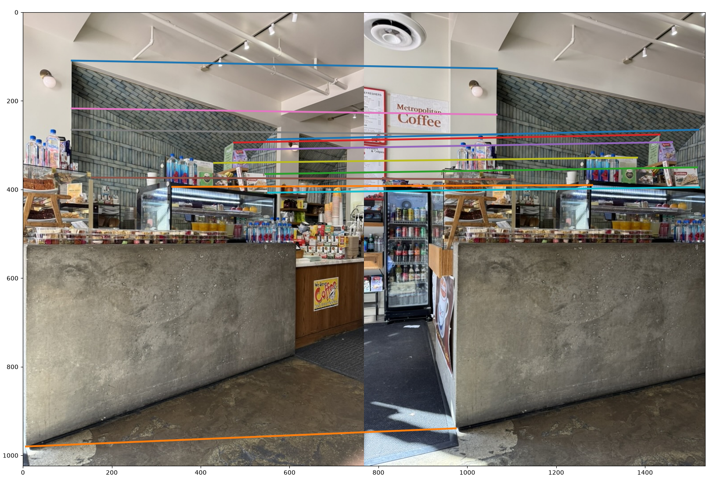
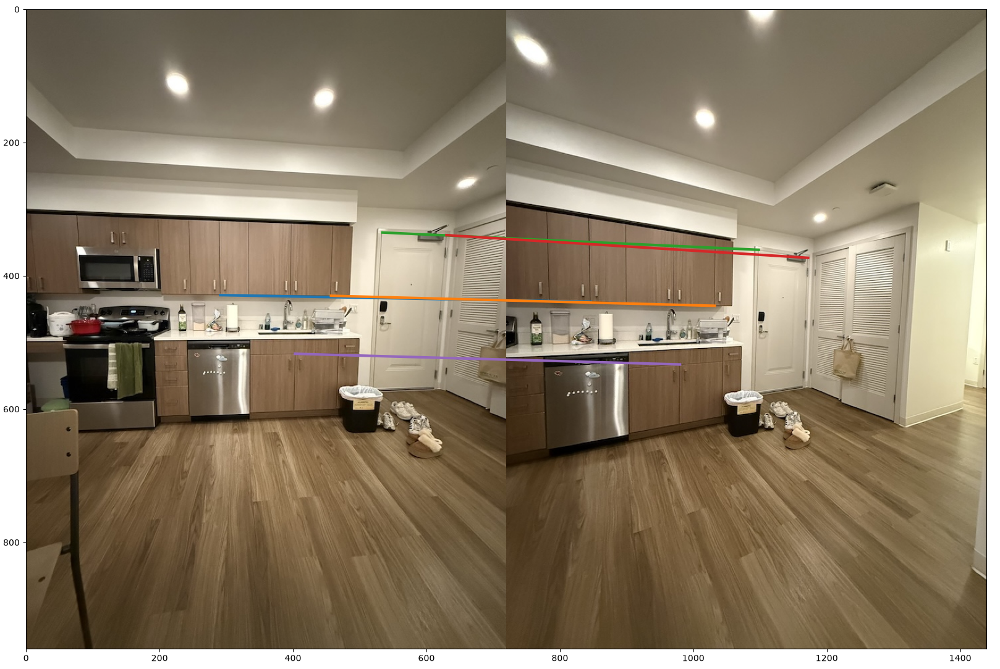
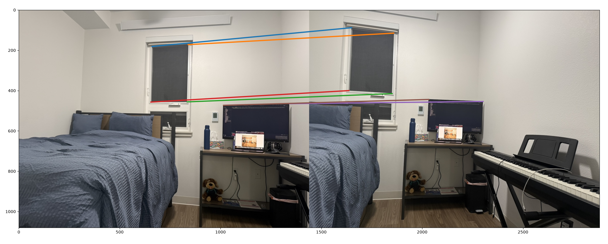
The homography matrices I recovered from these correspondences are shown below:
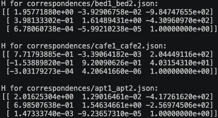
A.3: Warp the Images
Now that we can calculate the homography between two images, I wrote warping functions implementing nearest neighbor interpolation and bilinear interpolation:
def warp_image_nearest_neighbor(im, H):
return warp_image(im, H, "nn")
def warp_image_bilinear(im, H):
return warp_image(im, H, "bilinear")
def warp_image(im, H, method):
H_inv = np.linalg.inv(H)
corners = np.array(
[
[0, 0, 1],
[im.shape[1] - 1, 0, 1],
[0, im.shape[0] - 1, 1],
[im.shape[1] - 1, im.shape[0] - 1, 1],
]
).T
warped_corners = H @ corners
warped_corners_xy = warped_corners[:2] / warped_corners[2]
min_warped_x, max_warped_x, min_warped_y, max_warped_y = (
np.floor(warped_corners_xy[0].min()).astype(int),
np.ceil(warped_corners_xy[0].max()).astype(int),
np.floor(warped_corners_xy[1].min()).astype(int),
np.ceil(warped_corners_xy[1].max()).astype(int),
)
warped_im = np.zeros((max_warped_y - min_warped_y, max_warped_x - min_warped_x, 4))
for y, x in np.ndindex(warped_im.shape[:2]):
shifted_y, shifted_x = min_warped_y + y, min_warped_x + x
p_prime = np.array([shifted_x, shifted_y, 1])
p = H_inv @ p_prime
if method == "nn":
im_x, im_y = np.round(p[:2] / p[2]).astype(int)
if 0 <= im_x < im.shape[1] and 0 <= im_y < im.shape[0]:
warped_im[y, x] = im[im_y, im_x]
elif method == "bilinear":
im_x, im_y = p[:2] / p[2]
x1, y1 = np.floor(im_x).astype(int), np.floor(im_y).astype(int)
x2, y2 = x1 + 1, y1 + 1
w_x1 = (x2 - im_x) / (x2 - x1)
w_x2 = (im_x - x1) / (x2 - x1)
w_y1 = (y2 - im_y) / (y2 - y1)
w_y2 = (im_y - y1) / (y2 - y1)
neighbor_weights = [
((x1, y1), w_x1 * w_y1),
((x2, y1), w_x2 * w_y1),
((x1, y2), w_x1 * w_y2),
((x2, y2), w_x2 * w_y2),
]
total_w = 0
for (n_x, n_y), w in neighbor_weights:
if 0 <= n_x < im.shape[1] and 0 <= n_y < im.shape[0]:
warped_im[y, x] += im[n_y, n_x] * w
total_w += w
if total_w > 0:
warped_im[y, x] /= total_w
return warped_im, min_warped_x, min_warped_yHere are the results after using these functions to rectify an image of a computer monitor and an image of a window:
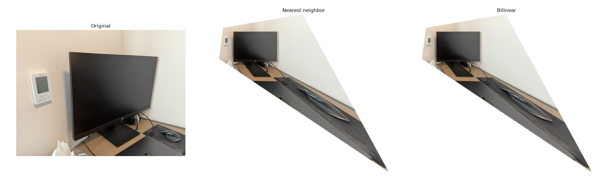
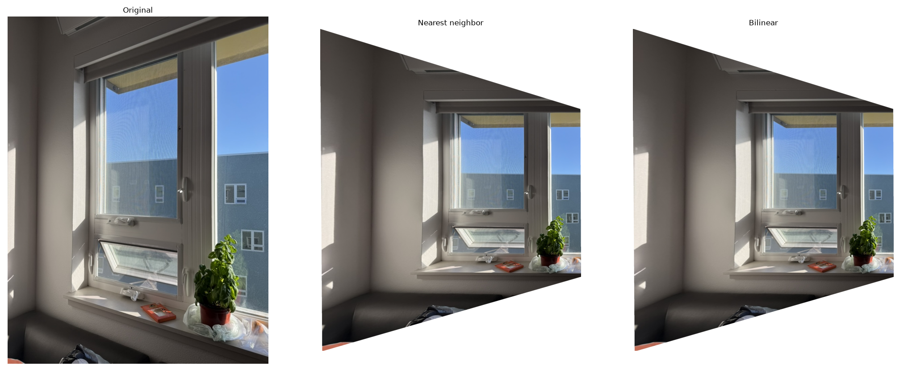
Bilinear interpolation is around four times slower than nearest neighbor interpolation because each output pixel is sampled from four image pixels instead of just one. This produces better image quality because edges are less jagged. With my images, however, the resolution is sufficiently high that the difference is not noticeably visible.
A.4: Blend the Images into a Mosaic
With homography calculation and warping now available, I blended the original three image sets together. I used a two-level Laplacian stack to blend the images, which resulted in virtually seamless mosaics! I created a rectangular mask slightly smaller than the bounds of each image, then blurred that mask differently for each level of the stack. I then bounded the visualization accordingly to fit the two blended images.
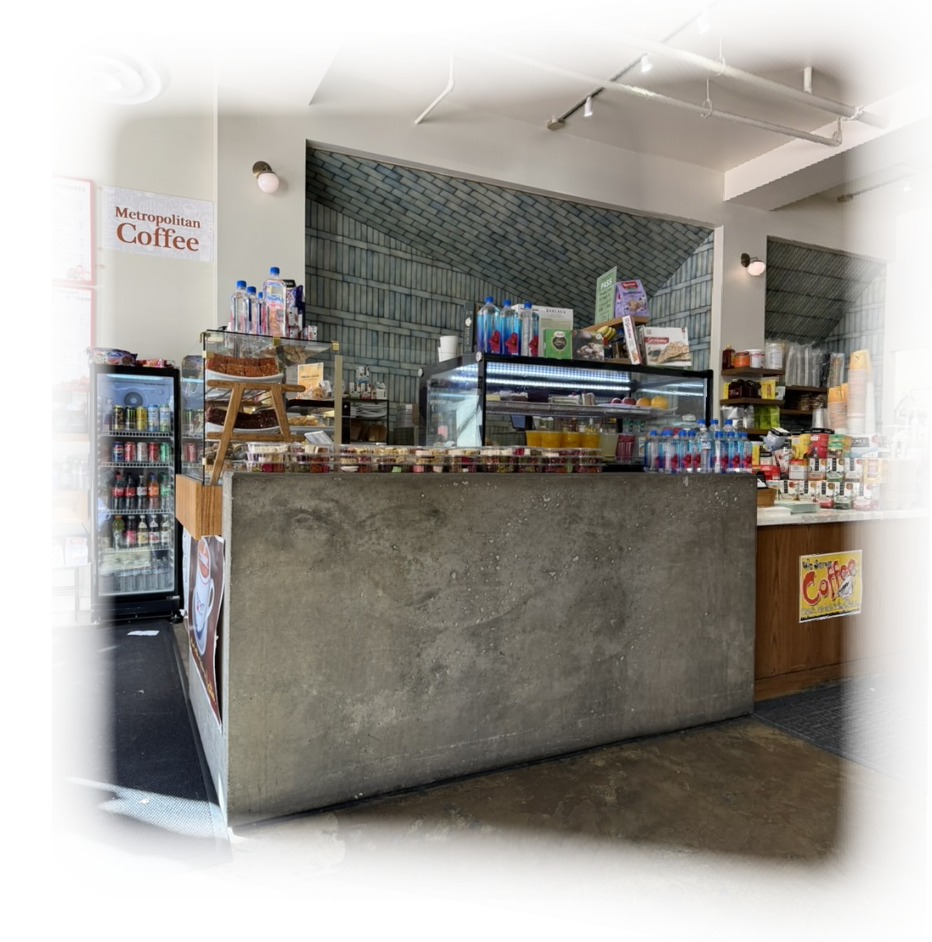
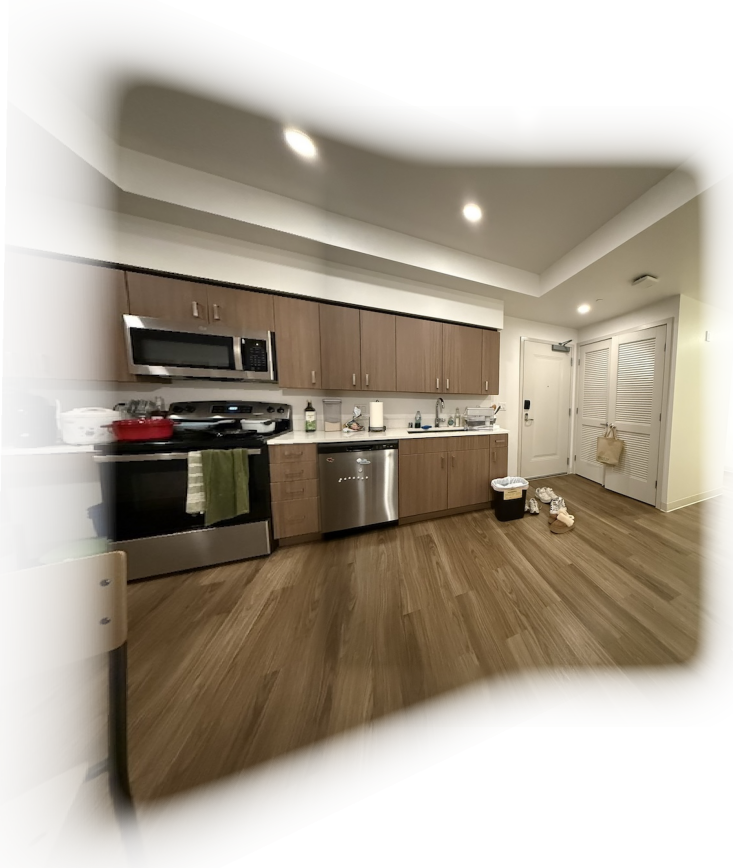
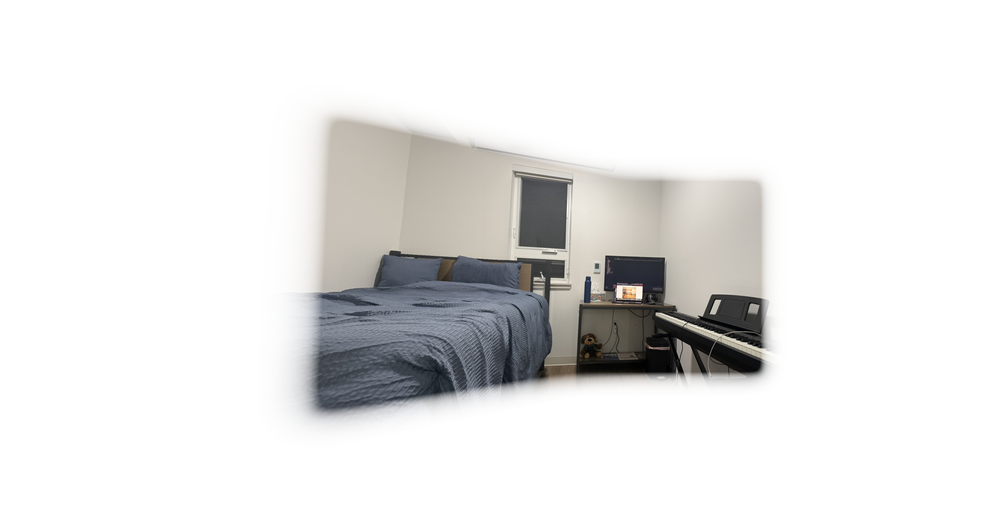